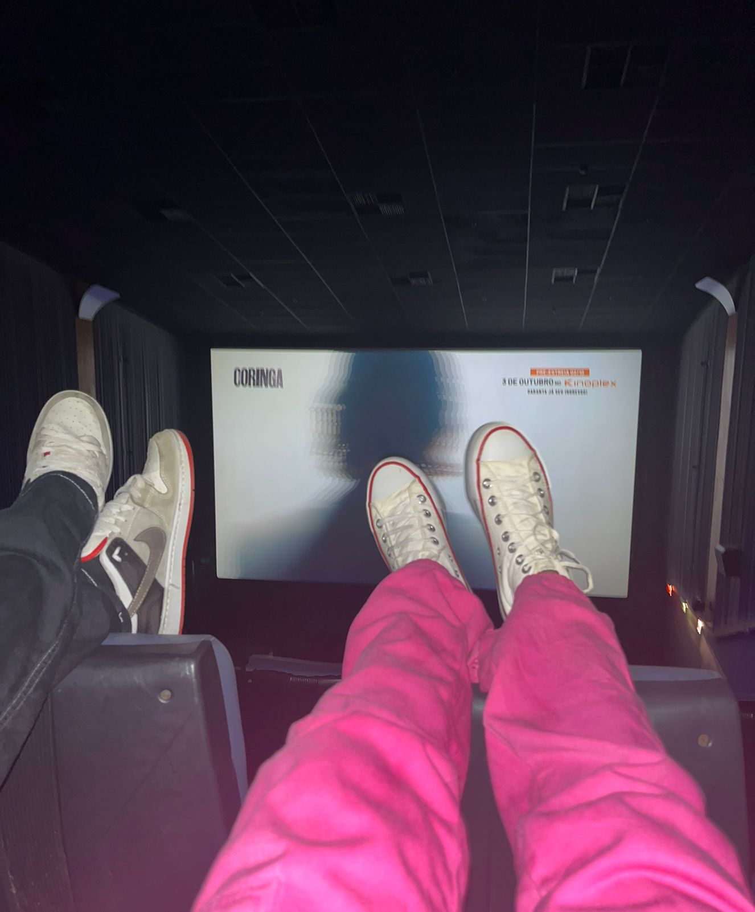

Nossas Memórias

Cada momento ao seu lado se torna inesquecível.

Dia inesquecível.
Juntos desde 25 de outubro de 2024
Cada momento ao seu lado se torna inesquecível.
Dia inesquecível.
"Amar é admirar com o coração." — Guilherme
Minha Princesa,
Sabe, o amor que eu sinto por você é gigante, tipo… uma coisa que nem consigo medir. Nunca achei que algo pudesse ser tão grande assim, mas, desde que você entrou na minha vida, tudo ganhou um sentido que eu nem sabia que existia. Em tão pouco tempo, você me ensinou o que é amor de verdade e o que significa amar alguém de corpo e alma. Com você, cada momento é especial. Você me mostrou o que é querer estar junto de verdade, querer cuidar, estar ali em qualquer situação. E isso tudo, sem precisar de esforço, porque te fazer feliz é o que me deixa feliz também. Eu quero estar ao seu lado sempre, pra te proteger, pra segurar sua mão, e pra te ver sorrir, porque seu sorriso é a melhor coisa que existe. Quero que saiba que, aconteça o que acontecer, eu tô aqui pra você. Meu coração é seu, e vou fazer de tudo pra te fazer feliz, hoje e todos os dias. Te amo muito, minha princesa. E é só o começo. Com todo o meu amor, Guilherme.